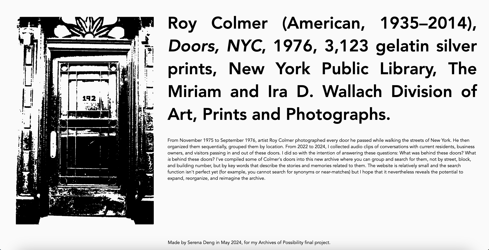
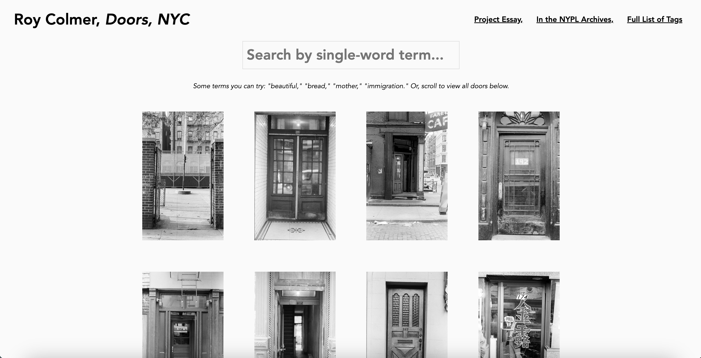

This was a fun interview project that I completed as a creative assigment for a class on archive history / theory, investigating alternative ways of organizing and categorizing information. I created a simple image search function using alt text. I hope to add a feature that displays the images randomly on the screen, to see what we might be able to experience outside of the dominating grid of modernity, urbanity, epistomology, coloniality, etc...
HTML, JAVASCRIPT, CSS, VERCEL
doorsnyc.vercel.web / code